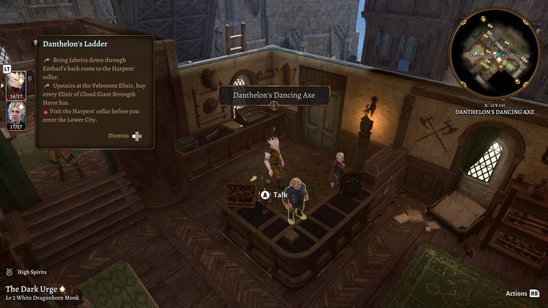
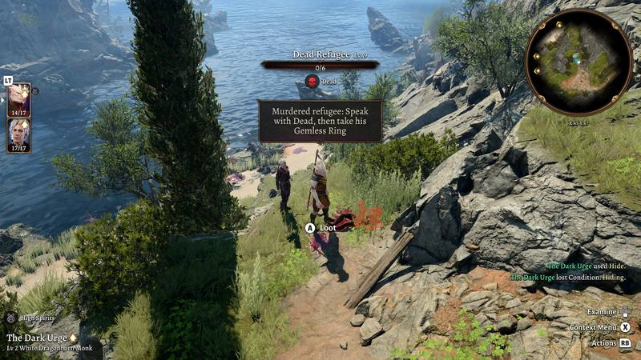
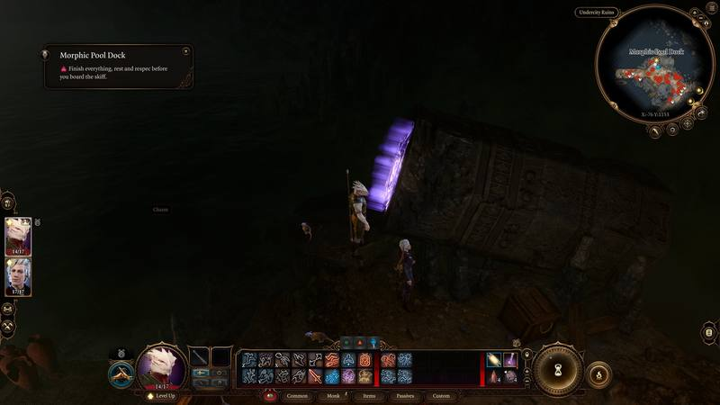

In the game
These are real captures. Anything from later in the story is hidden until you ask for it. Act 3 shots come from a test jump with a level 2 party, so the characters look early.
Where you stand

Walk near a spot and the game's own side popup opens at the top left. It fades after about ten seconds. On a controller it has a Dismiss button.
Notes wait until a fight is over and until you've moved after loading a save. At most two are on screen at once, and one you pass in the meantime shows a moment later.
A note goes quiet once all of its quests have closed.


Hidden: Act 3 shopShow screenshot

One-line notices
Small finds get a line in the game's notice bubble, gone in a couple of seconds, with the full note waiting in the journal. They queue up behind the game's own banners, so none get lost. Minimal doesn't use them for finds.
Hidden: Act 3 side questShow screenshot

Treasure glints

A hidden treasure sparkles once, the first time you come within 12 metres. There's no box and nothing to dismiss. Minimal has no glints.
The notes archive
Every note you've reached stays in the journal's Tutorials tab, with the coordinates from your minimap. At Minimal and Normal it holds the same safe text you saw on the ground. At Extensive the walkthrough follows it.
Hidden: Act 3 side questShow screenshot

Hidden: Act 3 side questShow screenshot

Quest lines
An icon and a line under a quest step. At Minimal and Normal a deadline never names what's coming, so it only says "Time-limited", "Before your next rest" or "Before you leave this act". At Extensive it names the event.
Hidden: Act 2 storyShow screenshot

Hidden: Act 2 storyShow screenshot

Dialogue tags
A tag at the end of the line, inside the game's own dialogue box. Normal shows only an icon: a star for a good line, or a red mark for one to avoid. Extensive adds what happens right after you click, and a skull on Dark Urge choices. Minimal leaves dialogue alone.
Hidden: Act 3 conversationShow screenshot

Hidden: Act 3 conversationShow screenshot

Item tooltips
Notable items end their tooltip with who they suit. On a controller, selecting the item shows it. Minimal leaves tooltips alone.

Map pins
Pins only show within 160 metres of your party, so the map never floods. Named pins are loot, and they clear when you pick the item up or open its chest. Extensive adds story steps. Minimal has no pins.


Warnings
Hidden: Act 3 place and questShow screenshot


Points of no return
Near one of the 7 exits, each open quest you would lose comes up as a notice, one every few seconds. Minimal and Normal only name quests you've already accepted.

Camp warnings
Go to camp while a long rest would cost you someone or a quest, and a warning shows after the arrival banner, then once more. There are 16 of these. Only Extensive says what would happen.